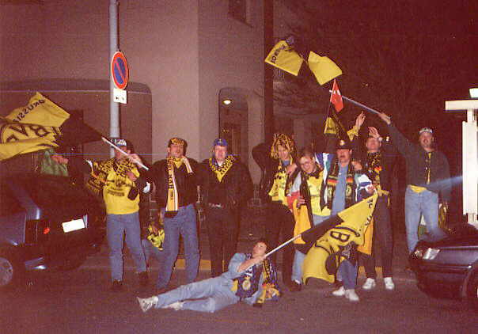
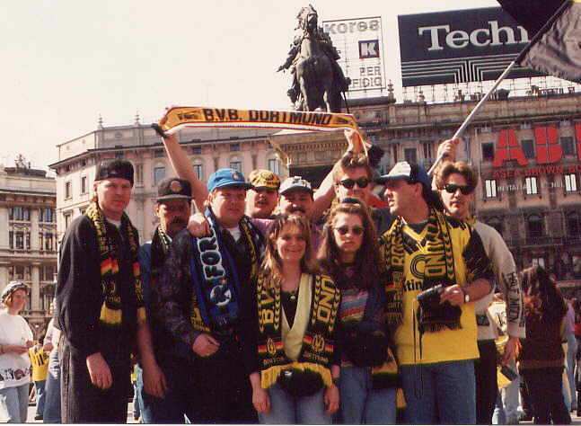
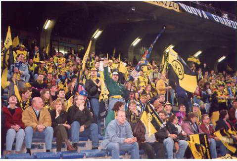

Der damals „harte Kern“ des Fanclubs (12 Mitglieder aus dem Kreis Unna, Dortmund und Warstein) lernte sich 1994 in Mailand anlässlich der Uefa-Cup-Begegnung Inter Mailand : Borussia Dortmund kennen. Das gesellige Beisammensein und die Verbundenheit zum BVB bewog uns damals dazu, eine inoffizielle Fangemeinschaft zu gründen. Schnell stellte sich heraus, dass diese lustige Truppe immer größer wurde und somit 1996 als offizieller Fanclub anerkannt wurde. Der Name Forza-Borussia 1996 ist auf die Gründung des Harten Kern´s in Mailand zurückzuführen.
  Es folgten weitere gemeinsame Touren in die Bundesligastadien Deutschlands und auch zu europäischen Spielen unserer Mannschaft.
Ein paar Worte und Daten zu unseren Mitgliedern:
Unser Fanclub zählt zur Zeit 83 Mitglieder im Alter von 1 – 66 Jahren. (Altersdurchschnitt 30-40 Jahre). Das Einzugsgebiet erstreckt sich von Dortmund über Bönen, Unna, Bochum bis Bonn . Sogar aus Luxembourg reisen Mitglieder an!!!
Seit 1997 organisieren wir jährlich eine gemeinsame Fanclubtour mit Übernachtung in die Stadien der Liga (u.a. 3x Berlin, 2x Freiburg, 2x Hamburg, Nürnberg, München, 2x Bremen und 2x Wolfsburg). An diesen Auswärtstouren nehmen etwa 30 – 40 Mitglieder, “und solche die es werden wollen“, teil. Im Mai 2015 ging die Reise über Heidelberg nach Hoffenheim.
Ein weiteres High-Light unseres Vereinslebens ist das alljährliche Sommerfest/Herbstfest. Hier treffen sich die Mitglieder zum gemeinsamen und lustigen Stelldichein und zum Träumen neuer Erfolge unserer Borussia. Fußball ist natürlich nicht das einzige Thema dieser Veranstaltungen....
Alljährlich im Herbst beenden wir ein jedes Jahr mit einem „Kultur-Highlight“ und einem gemeinsamen Besuch auf dem Dortmunder Weihnachtsmarkt. In den vergangenen Jahren besuchten wir u.a. die Vorstellungen von Bruno Knust´s “Dortmunder Revue“ im Theater Olpketal, besichtigten die Spielbank Hohensyburg inkl. einer umfangreichen Spieltischeinweisung oder organisierten eine Dortmunder Stadtrundfahrt mit anschließender Brauereibesichtigung unter dem Motto “Dortmund, seine Borussia und das Dortmunder Bier.
Augsburg 12.05.2017-14.05.2017
Sommerfest 2017 26.08.2017
Weitere Termineinträge folgen in Kürze!
Hier habt Ihr nun die Möglichkeit mit uns Kontakt aufzunehmen. Schreiben Sie uns eine E-mail. Wir freuen uns über Lob, Kritik oder Anregungen zu unserer Webseite.
Mit freundlichen Grüßen
Der Vorstand
Stefan Petschak (1. Vorsitzender) - Martina Oberreich (2. Vorsitzende)
info@forza-borussia.de
Fanclub-Konto
Volksbank Bönen eG
Konto: 37 812 601
BLZ: 410 622 15
IBAN: DE52 4106 2215 0037 8126 01
{kind=link}
{kind=link}
{kind=link}